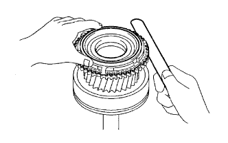

TRỤC SƠ CẤP > THÁO |
| 1. THÁO VÀNH ĐỒNG TỐC NO.2 |
Tháo vành đồng tốc.
| 2. THÁO VÒNG BI TRỤC SƠ CẤP |
 |
Tháo 13 vòng bi trục sơ cấp.
| 3. THÁO VÒNG BI PHÍA TRƯỚC TRỤC SƠ CẤP |
 |
Dùng kìm tháo phanh, tháo phanh hãm.
Dùng SST và máy ép, ép vòng bi phía truớc ra.
| 4. KIỂM TRA VÀNH ĐỒNG TỐC NO.2 |
Bôi dầu bánh răng lên mặt côn của trục sơ cấp. Kiểm tra hiệu quả đồng tốc của vành đồng tốc No.2. Lắp vòng đồng tốc và mặt côn của trục. Tác dụng lực ép vào vòng đồng tốc để thử quay nó theo cả hai chiều. Kiểm tra rằng vòng đồng tốc bị khoá.
Kiểm tra lại hiệu quả đồng tốc của vành đồng tốc No.2
|  |
Dùng thước lá, đo khe hở giữa lưng của vành đồng tốc No.2 và mặt đầu then hoa trục sơ cấp.